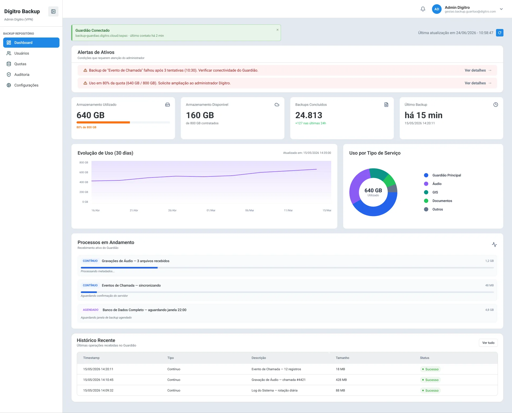
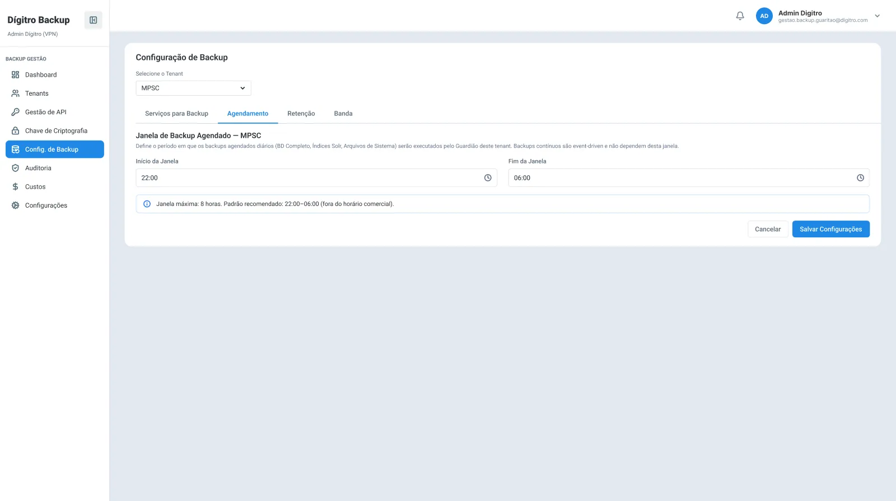
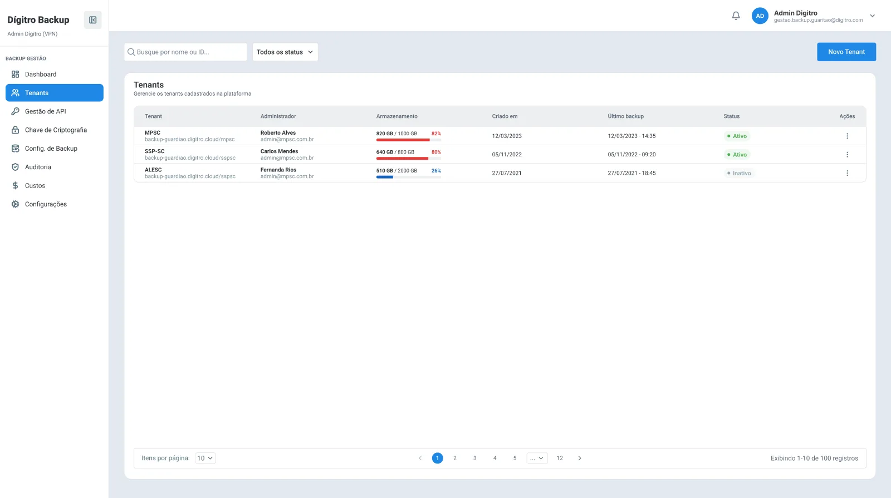
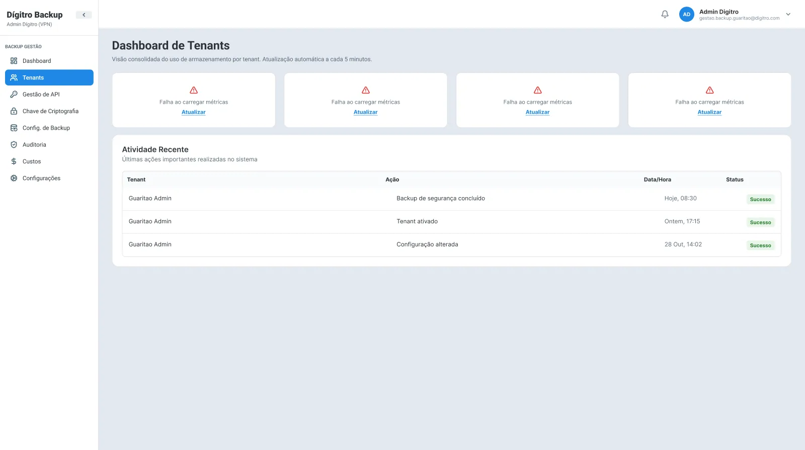
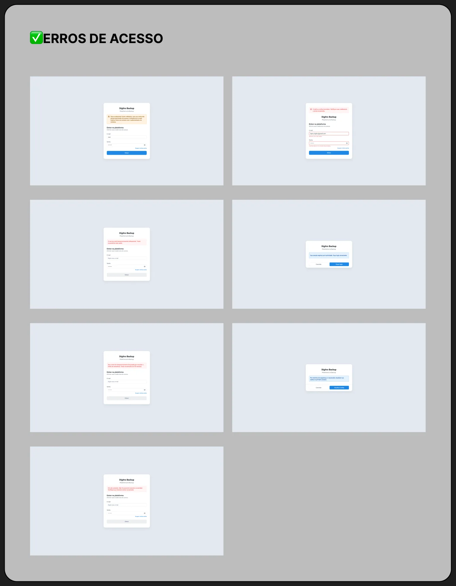

Proteger dados é invisível quando dá certo e urgente quando dá errado. A interface precisava dar conta dos dois momentos.


Dashboard do cliente e configuração da janela de backup.
Todos os dados exibidos nas telas são fictícios.
O Dígitro Backup conecta a infraestrutura onde os dados nascem a um ambiente em nuvem, garantindo cópias seguras e atualizadas sempre que for preciso recuperar algo. São três módulos, cada um com um público e um nível de controle diferente.
Administração central: clientes (tenants), tokens de API, chaves de criptografia, regras de backup, custos e auditoria.
Painel de acompanhamento: espaço usado, cotas, usuários, histórico de execuções e alertas.
O agente que coleta os dados, envia com segurança para a nuvem e verifica a integridade dos arquivos.
Num sistema de backup, a pergunta principal é "está tudo bem?". Por isso o dashboard abre com o status de conexão do Guardião e com os alertas ativos, como uma falha após 3 tentativas ou uma cota em 80%, cada um com um atalho direto pra resolver. Só depois vêm as métricas, os gráficos de evolução e o histórico.
Dashboard do Repositório: status, alertas, consumo, processos em andamento e histórico.
A configuração de backup de cada cliente foi dividida em quatro abas (serviços, agendamento, retenção e banda), em vez de um formulário gigante. Cada campo crítico traz a orientação junto, como "janela máxima de 8 horas, padrão recomendado das 22h às 6h", pra que o administrador não precise adivinhar.
Janela de backup com a recomendação ao lado do campo.

Gestão de tenants: consumo e status de cada cliente.
Login com verificação em duas etapas, com estados de padrão, verificação e erro.
Troca da chave de criptografia protegida por código de verificação.
Confirmação de identidade antes de gerar um token, que aparece uma única vez com aviso de cópia.
Registro de todas as ações em todos os módulos, pra saber quem fez o quê e quando.
Um sistema de backup não pode deixar a pessoa sem resposta. Mapeei quatro grupos de cenários de erro e desenhei cada estado, pra que o time de desenvolvimento não precisasse improvisar.
Telas e listas que não carregaram, com uma ação pra tentar de novo.
Erro parcial: se um widget falha, só ele mostra o aviso e o resto da tela continua funcionando.
Campos inválidos, obrigatórios e erro ao salvar, sem perder o que já foi digitado.
7 estados de login: sem permissão, sessão expirada, conta bloqueada, primeiro acesso, serviço instável, erro de conexão e erro de dados.

Erro parcial: as métricas falham, mas a atividade recente continua disponível.

Os 7 estados de erro do login, cada um com uma mensagem e um próximo passo.
Os três módulos usam o mesmo layout, menu lateral e componentes. Só muda o que cada perfil pode ver.
Avisos de alerta e falha também fora da plataforma, com a mesma linguagem da interface.
Página de desenvolvimento com especificações e o design system do produto documentado.
Backup em nuvem era uma lógica nova pra mim: retenção, criptografia, agentes. Encarei documentações densas até entender o sistema, e só depois abri o Figma.
Com tanta informação por tela, o trabalho é decidir o que vem primeiro. Os alertas no topo do dashboard nasceram daí.
Transformar regra de sistema em texto que o administrador entende sem precisar abrir a documentação.
Telas, fluxos, estados de erro, design system e handoff, do jeito que foram entregues.
Próximo projeto
IntelleTotum →